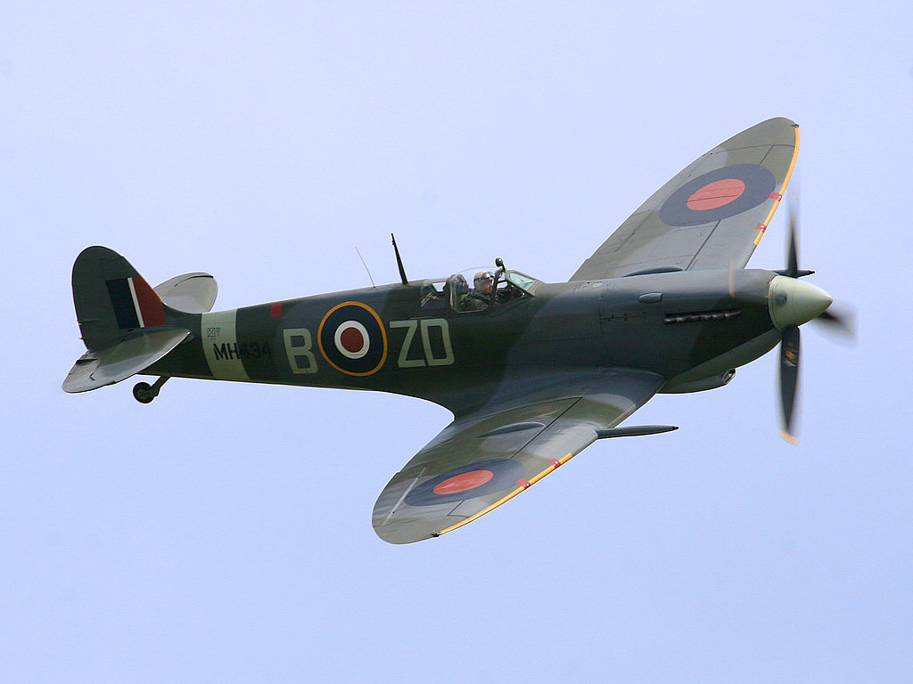

Durante la Segunda Guerra Mundial, la aviación militar experimentó un desarrollo sin precedentes. Los aviones jugaron un papel crucial en el resultado de la guerra, destacando modelos icónicos por su diseño, potencia y relevancia histórica. A continuación, se presentan seis de los aviones más famosos de este conflicto, junto con una breve descripción y sus especificaciones básicas.

Supermarine Spitfire
Caza británico célebre por su papel en la Batalla de Inglaterra.
Especificaciones:
Velocidad: 594 km/h
Autonomía: 760 km
Armamento: 8 ametralladoras Browning .303
Messerschmitt Bf 109
Principal caza de la Luftwaffe alemana, versátil y letal.
Especificaciones:
Velocidad: 640 km/h
Autonomía: 850 km
Armamento: 2 cañones MG 151/20, 2 ametralladoras MG 131
P-51 Mustang
Caza estadounidense famoso por escoltar bombarderos sobre Europa.
Especificaciones:
Velocidad: 703 km/h
Autonomía: 2,755 km
Armamento: 6 ametralladoras Browning .50
Mitsubishi A6M Zero
Caza japonés conocido por su maniobrabilidad y alcance.
Especificaciones:
Velocidad: 533 km/h
Autonomía: 1,870 km
Armamento: 2 cañones de 20 mm, 2 ametralladoras de 7.7 mm
Boeing B-17 Flying Fortress
Bombardero pesado estadounidense, símbolo de la campaña aérea aliada.
Especificaciones:
Velocidad: 462 km/h
Autonomía: 3,219 km
Armamento: hasta 13 ametralladoras, 8,000 kg de bombas
Junkers Ju 87 Stuka
Bombardero en picado alemán, temido por su sirena y precisión.
Especificaciones:
Velocidad: 390 km/h
Autonomía: 500 km
Armamento: 2 ametralladoras MG 17, 1 ametralladora MG 15, 1,800 kg de bombas